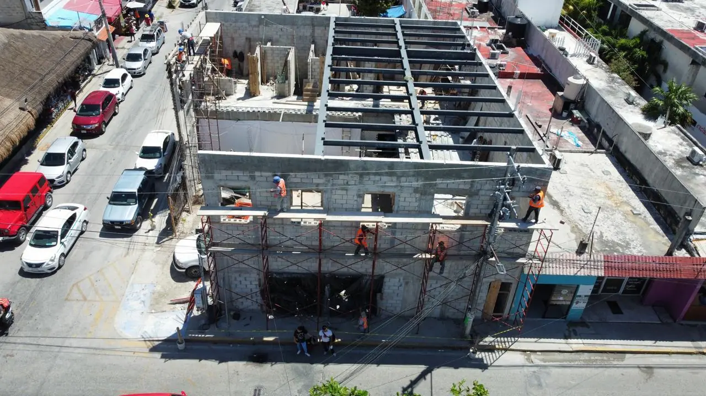

Para propietarios de terreno, desarrolladores e inversionistas que quieren una plaza comercial en Playa del Carmen: de 4 a 30 locales con estacionamiento, un ancla y locales listos para alimentos. Empezamos por los números que deciden si el terreno funciona — uso de suelo, cajones de estacionamiento y acceso — y después diseñamos, tramitamos y construimos la plaza hasta entregarla lista para rentar, con un solo contrato a precio cerrado.

Uso de suelo, densidad, cajones de estacionamiento y acceso revisados antes de comprar o diseñar.
Arquitectura, estructura, instalaciones, Protección Civil, DRO y licencia municipal.
Estructura, cubierta, vanos de fachada y losas calculadas para viento de huracán.
Ductos de extracción, trampas de grasa y más carga eléctrica para los locatarios de mayor renta.
Pavimento, drenaje, sombra, iluminación, tótem, basura y seguridad.
Medidores por local, cisterna, planta de tratamiento si hace falta y planta de emergencia.
Haga esta cuenta antes que nada. Los cajones exigidos para comercio son muchos y los restaurantes se evalúan con más rigor que las tiendas, así que el área rentable no es la que permite la densidad, sino la que dejan libre los cajones, más circulaciones, maniobras y áreas verdes. En plazas de barrio lo normal es estacionamiento en superficie; uno en niveles rara vez se paga si el terreno no es muy caro. La visibilidad y una entrada y salida fáciles importan más que los metros, y la carga y la basura deben ir separadas de los clientes.
El propietario construye estructura, cubierta, muros exteriores, vanos de fachada, losa de piso y servicios hasta cada local — luz con medidor propio, agua y drenaje, con capacidad holgada. El locatario hace divisiones, plafones, acabados, A/C, cancel y anuncio según los lineamientos de la plaza. Dos decisiones se pagan solas: dejar dos o tres locales listos para alimentos desde el inicio (ducto de extracción a azotea, trampa de grasa, más carga y agua) y escribir lineamientos de fachada para que la plaza no se vea improvisada en dos años.
Playa del Carmen se divide en dos: en Quinta Avenida la calle define la obra — acceso peatonal, carga solo en horarios fijos, reglas estrictas de anuncios y fachada, y un sobrecosto de alrededor de 15–30% frente al mismo trabajo con acceso vehicular; en las avenidas y la carretera 307 es construcción comercial normal, con estacionamiento, logística más fácil y rentas menores. El municipio de Solidaridad otorga las licencias en ambos casos.
| Concepto | Costo |
|---|---|
| Obra negra, por m² rentable | $9,400–$16,600 |
| Local preparado para alimentos (extracción, grasa, servicios), cada uno | $156,000–$520,000 |
| Estacionamiento en superficie, pavimento, drenaje e iluminación, por cajón | $26,000–$72,800 |
| Jardinería y árboles de sombra, por m² de área abierta | $420–$1,560 |
| Planta de tratamiento para ocupación total | $416,000–$1,560,000 |
| Planta de emergencia para áreas comunes con transferencia | $312,000–$936,000 |
| Tótem y señalización | $156,000–$624,000 |
En Playa del Carmen: Remodelación de plaza comercial · Adecuación de locales · Remodelación de locales · Construcción comercial · Estacionamientos · Permisos de construcción · Remodelación de restaurantes y bares
Construcción de plaza comercial en otras ciudades: Cancún · Tulum · Puerto Morelos · Puerto Aventuras
Clúster plazas: Plazas y centros comerciales · Construcción de centros comerciales · Mantenimiento de plazas · Costo de construir una plaza · Costo de adecuar un local
Calculadora de costo comercial
Envíe el terreno, el local o la plaza; visitamos, revisamos permisos y le enviamos un presupuesto por partidas. Respuesta en 2 minutos.
Cotizar por WhatsAppSu opinión ayuda a otros propietarios a decidir, y a nosotros a mejorar.
Escribir una reseñaVer reseñas en Google